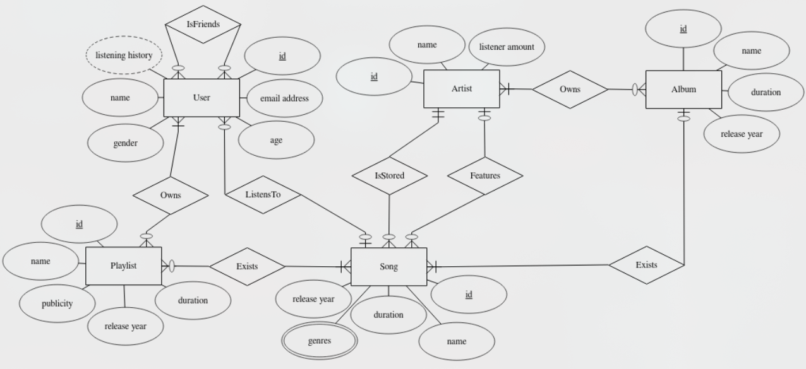

This was a university course assignment from the University of Jyväskylä where I study computer science and cyber-security. The task was to plan, build and optimize an SQLite-relational database for a subject of my choice. I chose Spotify.
In the University of Jyväskylä, the grading system is from 0-5 and from this assignment I got a 5 (proof at the bottom).
The practical assignment is one of the assessed components of this course. In the assignment, your task is to design and optimize an SQLite relational database for a domain of your own choosing.
You can find the detailed instructions and assessment criteria for the assignment below. Summary of the instructions:
You can find the full and detailed instructions on the assignment page of the course here. It is in Finnish but translatable for example with google translate or ChatGPT :)
Quick jump to different parts of the assignment:
Task 1
Task 2
Task 3
Task 4
Task 5
Task 6
Task 7
The first task was to choose the subject and write a database requirement specification for it. The relational database was to be made for a real use. I chose spotify as my subject because I'm very interested in music and it felt like it would be fairly logical to make.
Here is my requirement specification:
Spotify
Spotify is a digital music streaming application through which people can listen to music. The goal of the application is to allow people to enjoy music they like, so they must be able to choose what they want to listen to at any given time. Artists must also be able to upload music to the platform for users to listen to. The structure of the application's database should be based on the relationships between users, songs, and playlists.
The database must store user information, artists, songs, albums, and playlists (both public and private).
For users, the database must store the user ID, email address, name, age, and gender. A user can have friends and a listening history that stores the last 20 songs played. A user may own zero or many playlists. A user can listen to one song at a time.
For artists, the database must store the artist ID, name, and their monthly listener count. Artists may have zero or many songs uploaded to Spotify, and they may also have albums.
For songs, the database must store the song ID, name, duration, genre (there may be multiple genres), and release year. A song may have featured artists (artists performing on the song in addition to the main artist). A song has one main artist. A song can belong to at most one album, but it can appear in many playlists. A song can be listened to by zero or many users.
For albums, the database must store the album ID, name, duration, and release year. Albums must contain at least one song and are owned by the performing artist(s).
For playlists, the database must store the playlist ID, name, duration, visibility (public or private), and release year. A playlist must contain at least one song in order to exist. A playlist can be owned by one or many users.
The second task included drawing an Entity-Relationship model according to the requirement specification. Here is the model I made:
